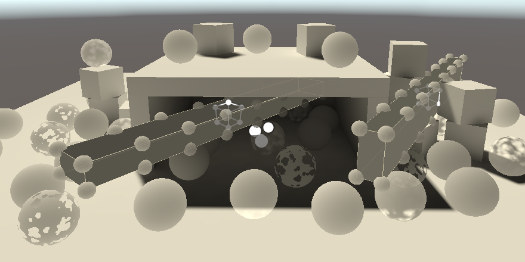
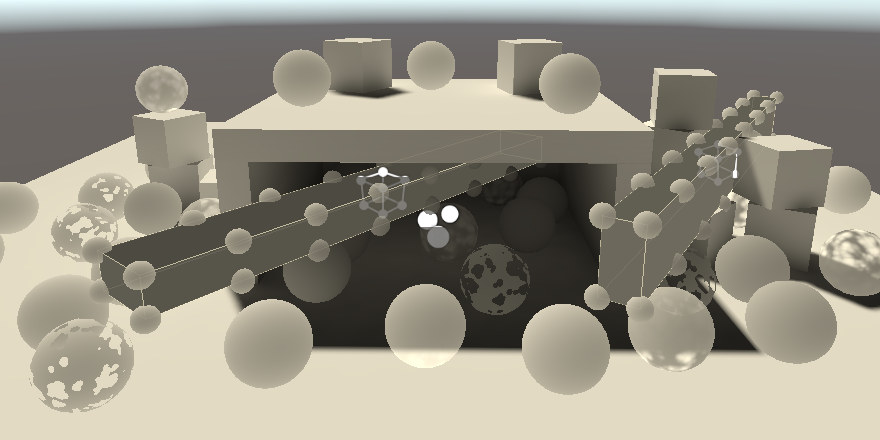

Baked Light
Light Maps and Probes
- Bake static global illumination.
- Sample light maps, probes, and LPPVs.
- Create a meta pass.
- Support emissive surfaces.
This is the fifth part of a tutorial series about creating a custom scriptable render pipeline. It makes it possible to bake static lighting into maps and probes.
This tutorial is made with Unity 2019.2.18f1.
Baking Static Light
Up to this point we've calculated all lighting while rendering, but this isn't the only option. Lighting can also be calculated ahead of time and stored in light maps and probes. There are two main reasons why this is done: to reduce the amount of realtime calculations and to add indirect lighting that cannot be calculated at runtime. The latter is part of what's collectively known as global illumination: light that's not coming from light sources directly, but indirectly via reflection, from the environment, or from emissive surfaces.
The downside of baked lighting is that it is static so cannot change at runtime. It also needs to be stored, which increases both build size and memory usage.
Scene Lighting Settings
Global Illumination is configured per scene, via the Scene tab of the Lighting window. Baked lighting is enabled via the Baked Global Illumination toggle under Mixed Lighting. There's also a Lighting Mode option, which we'll set the Baked Indirect, which means that we bake all static indirect lighting.
If your project was created in Unity 2019.2 or earlier then you'll also see an option to enable realtime lighting, which should be disabled. If your project was created in Unity 2019.3 or later then that option won't be shown.

Further down is a Lightmapping Settings section that can be used to control the lightmapping process, which is done by the Unity editor. I'll use the default settings except that LightMap Resolution is reduced to 20, Compress Lightmaps is disabled, and Directional Mode is set to Non-Directional. I also use the Progressive CPU lightmapper.
Static Objects
To demonstrate baked lighting I created a scene with a green plane as the ground, a few boxes and spheres, and a structure in the center that only has one open side so its interior is fully shadowed.


The scene has a single directional light with its Mode set to Mixed. This tells Unity that it should bake the indirect lighting for this light. Besides that the light still works like a regular realtime light.

I also include the ground plane and all cubes—including those that form the structure—in the baking process. They'll be the objects from which the light bounces off, thus becoming indirect. This is done by enabling the Contribute Global Illumination toggle of their MeshRenderer components. Enabling this also automatically switches their Receive Global Illumination mode to Lightmaps, which means that the indirect light that reaches their surfaces get baked into the light map. You can also enable this mode by enabling Contribute GI from the object's Static dropdown list, or by making it fully static.
Once enabled, the scene's lighting will be baked again, assuming that Auto Generate is enabled in the Lighting window, otherwise you'll have to press the Generate Lighting button. Lightmapping settings also shows up in the MeshRenderer components, including a view of the light map that contains the object.

The spheres don't show up in the light map because they don't contribute to global illumination and are thus considered dynamic. They'll have to depend on light probes, which we'll cover later. Static objects could also be excluded from the map by switching their Receive Global Illumination mode back to Light Probes. They'll still affect the baked results, but won't take up space in the light map.
Fully-Baked Light
The baked lighting is mostly blue because it is dominated by the sky box, which represents indirect illumination from the environment's sky. Brighter areas around the building at the center are caused by indirect lighting from the light source bouncing off the ground and walls.
We can also bake all lighting into the map, both direct and indirect. That's done by setting the light's Mode to Baked. It then no longer provides realtime lighting.


Effectively, the direct light of a baked light is also treated as indirect light and thus ends up in the map, making it a lot brighter.

Sampling Baked Light
Everything currently gets rendered solid black, because there is no realtime light and our shader doesn't know about global illumination yet. We have to sample the light map to make this work.
Global Illumination
Create a new ShaderLibrary/GI.hlsl file to contain all code related to global illumination. In it, define a GI struct and a GetGI function to retrieve it, given some light map UV coordinates. Indirect light comes from all directions and thus can be used for diffuse lighting only, not specular. So give the GI struct a diffuse color field. Initially fill it with the light map UV, for debugging purposes.
#ifndef CUSTOM_GI_INCLUDED
#define CUSTOM_GI_INCLUDED
struct GI {
float3 diffuse;
};
GI GetGI (float2 lightMapUV) {
GI gi;
gi.diffuse = float3(lightMapUV, 0.0);
return gi;
}
#endif
Add a GI parameter to GetLighting and use it initialize the color value, before accumulating realtime lighting. We don't multiply it with the surface's diffuse reflectivity at this point so we can see the unmodified received light.
float3 GetLighting (Surface surfaceWS, BRDF brdf, GI gi) {
ShadowData shadowData = GetShadowData(surfaceWS);
float3 color = gi.diffuse;
…
return color;
}
Include GI before Lighting in LitPass.
#include "../ShaderLibrary/GI.hlsl" #include "../ShaderLibrary/Lighting.hlsl"
The get the global illumination data in LitPassFragment, initially with zero UV coordinates, and pass it to GetLighting.
GI gi = GetGI(0.0); float3 color = GetLighting(surface, brdf, gi);
Light Map Coordinates
To get the light map UV coordinates Unity has to send them to the shader. We have to instruct the pipeline to do this for each object that is lightmapped. This is done by setting the per-object data property of the drawing settings to PerObjectData.Lightmaps in CameraRenderer.DrawVisibleGeometry.
var drawingSettings = new DrawingSettings(
unlitShaderTagId, sortingSettings
) {
enableDynamicBatching = useDynamicBatching,
enableInstancing = useGPUInstancing,
perObjectData = PerObjectData.Lightmaps
};
Unity will now render lightmapped objects with a shader variant that has the LIGHTMAP_ON keyword. Add a multi-compile directive for that to the CustomLit pass of our Lit shader.
#pragma multi_compile _ LIGHTMAP_ON #pragma multi_compile_instancing
The UV coordinates for the light map are part of the Attributes vertex data. We have to transfer them to Varyings so we can use them in LitPassFragment. But we should only do this when needed. We can use an approach similar to transferring the instancing identifier and rely on GI_ATTRIBUTE_DATA, GI_VARYINGS_DATA, and TRANSFER_GI_DATA macros.
struct Attributes {
…
GI_ATTRIBUTE_DATA
UNITY_VERTEX_INPUT_INSTANCE_ID
};
struct Varyings {
…
GI_VARYINGS_DATA
UNITY_VERTEX_INPUT_INSTANCE_ID
};
Varyings LitPassVertex (Attributes input) {
Varyings output;
UNITY_SETUP_INSTANCE_ID(input);
UNITY_TRANSFER_INSTANCE_ID(input, output);
TRANSFER_GI_DATA(input, output);
…
}
Plus another GI_FRAGMENT_DATA macro to retrieve the necessary arguments for GetGI.
GI gi = GetGI(GI_FRAGMENT_DATA(input));
We have to define these macros ourselves, in GI. Initially define them as nothing, except GI_FRAGMENT_DATA which will simply be zero. A macro's parameter list works like a function's, except that there are no types and no space is allowed between the macro name and parameter list, otherwise the list is interpreted as the thing the macro defines.
#define GI_ATTRIBUTE_DATA #define GI_VARYINGS_DATA #define TRANSFER_GI_DATA(input, output) #define GI_FRAGMENT_DATA(input) 0.0
When LIGHTMAP_ON is defined the macros should instead define code that adds another UV set to the structs, copies it, and retrieves it. The light map UV are provided via the second texture coordinates channel so we need to use the TEXCOORD1 semantic in Attributes.
#if defined(LIGHTMAP_ON) #define GI_ATTRIBUTE_DATA float2 lightMapUV : TEXCOORD1; #define GI_VARYINGS_DATA float2 lightMapUV : VAR_LIGHT_MAP_UV; #define TRANSFER_GI_DATA(input, output) output.lightMapUV = input.lightMapUV; #define GI_FRAGMENT_DATA(input) input.lightMapUV #else #define GI_ATTRIBUTE_DATA #define GI_VARYINGS_DATA #define TRANSFER_GI_DATA(input, output) #define GI_FRAGMENT_DATA(input) 0.0 #endif

All static baked objects now show their UV, while all dynamic objects remain black.
Transformed Light Map Coordinates
The light map coordinates are usually either automatically generated per mesh by Unity or part of the imported mesh data. They define a texture unwrap that flattens the mesh so it maps to texture coordinates. The unwrap is scaled and positioned per object in the light map so each instance gets its own space. This works just like the scale and translation applied to the base UV. We have to apply this to the light map UV as well.
The light map UV transformation is passed to the GPU as part of the UnityPerDraw buffer, so add it there. It's known as unity_LightmapST. Even though it's deprecated, also add unityDynamicLightmapST after it, otherwise SRP batcher compatibility can break.
CBUFFER_START(UnityPerDraw) float4x4 unity_ObjectToWorld; float4x4 unity_WorldToObject; float4 unity_LODFade; real4 unity_WorldTransformParams; float4 unity_LightmapST; float4 unity_DynamicLightmapST; CBUFFER_END
Then adjust the TRANSFER_GI_DATA macro so it applies the transformation. Macro definitions can be split into multiple lines, if the end of each but the last line is marked with a backslash.
#define TRANSFER_GI_DATA(input, output) \ output.lightMapUV = input.lightMapUV * \ unity_LightmapST.xy + unity_LightmapST.zw;
Sampling the Light Map
Sampling the light map is the responsibility of GI. The light map texture is known as unity_Lightmap with accompanying sampler state. Also include EntityLighting.hlsl from the Core RP Library, as we'll use it to retrieve the light data.
#include "Packages/com.unity.render-pipelines.core/ShaderLibrary/EntityLighting.hlsl" TEXTURE2D(unity_Lightmap); SAMPLER(samplerunity_Lightmap);
Create a SampleLightMap function that invokes SampleSingleLightmap when there is a light map and otherwise returns zero. Use it in GetGI to set the diffuse light.
float3 SampleLightMap (float2 lightMapUV) {
#if defined(LIGHTMAP_ON)
return SampleSingleLightmap(lightMapUV);
#else
return 0.0;
#endif
}
GI GetGI (float2 lightMapUV) {
GI gi;
gi.diffuse = SampleLightMap(lightMapUV);
return gi;
}
The SampleSingleLightmap function requires a few more arguments. First, we have to pass it the texture and sampler state as the first two arguments, for which we can use the TEXTURE2D_ARGS macro.
return SampleSingleLightmap( TEXTURE2D_ARGS(unity_Lightmap, samplerunity_Lightmap), lightMapUV );
After that comes the scale and translation to apply. Because we already did that earlier we'll use an identity transformation here.
return SampleSingleLightmap( TEXTURE2D_ARGS(unity_Lightmap, samplerunity_Lightmap), lightMapUV, float4(1.0, 1.0, 0.0, 0.0) );
Then comes a boolean to indicate whether the light map is compressed, which is the case when UNITY_LIGHTMAP_FULL_HDR is not defined. And the last argument is a float4 containing decode instructions. Use LIGHTMAP_HDR_MULTIPLIER for its first component and LIGHTMAP_HDR_EXPONENT for its second. Its other components aren't used.
return SampleSingleLightmap( TEXTURE2D_ARGS(unity_Lightmap, samplerunity_Lightmap), lightMapUV, float4(1.0, 1.0, 0.0, 0.0), #if defined(UNITY_LIGHTMAP_FULL_HDR) false, #else true, #endif float4(LIGHTMAP_HDR_MULTIPLIER, LIGHTMAP_HDR_EXPONENT, 0.0, 0.0) );

Disabling Environment Lighting
The baked light is quite bright because it also includes indirect lighting from the sky. We can disable that by reducing its Intensity Multiplier to zero. That allows us to focus on the single directional light.

Note that the inside of the structure is now indirectly lit, mostly via the ground.
Light Probes
Dynamic objects do not affect baked global illumination, but they can be affected by it, via light probes. A light probe is a point in the scene that has baked all incoming light, by approximating it with a third-order polynomial, specifically L2 spherical harmonics. Light probes are placed around the scene and Unity interpolates between them per object to arrive at a final lighting approximation for their position.
Light Probe Group
Light probes are added to a scene by creating a light probe group, via GameObject / Light / Light Probe Group. That creates a game object with a LightProbeGroup component that contains six probes in a cube shape by default. You can move, duplicate, and delete individual probes as if they were game objects, when Edit Light Probes is enabled.


There can be multiple probe groups in a scene. Unity combines all their probes and then creates a tetrahedral volume mesh connecting them all. Each dynamic object ends up inside one tetrahedron. The four probes at its vertices are interpolated to arrive at the final lighting applied to the object. If an object ends up outside the area covered by the probes the nearest triangle is used instead, so lighting might appear weird.
By default, when a dynamic object is selected gizmos are used to display the probes that affect the object, along with the interpolated result at its position. You can change this by adjusting Light Probe Visualization under the Debug Settings of the Lighting window.

Where you place light probes depends on the scene. First, they're only needed where dynamic objects will go. Second, put them where there's a change in lighting. Each probe is an end point of interpolation, so put them around lighting transitions. Third, don't put them inside baked geometry, as they end up black. Finally, interpolation goes through objects, so if lighting is different on opposite sides of a wall put probes close to both sides of the wall. That way no object ends up interpolating between both sides. Beyond that you have to experiment.
Sampling Probes
The interpolated light probe data has to be passed to the GPU per object. We have to tell Unity to do this, this time via PerObjectData.LightProbe instead of PerObjectData.Lightmaps. We need to enable both feature flags, so combine them with the boolean OR operator.
perObjectData = PerObjectData.Lightmaps | PerObjectData.LightProbe
The required UnityPerDraw data consists of seven float4 vectors, representing the components of the polynomial for red, green, and blue light. They're named unity_SH*, with * being either A, B, or C. The first two have three version with r€, g€, and b€ suffixes.
CBUFFER_START(UnityPerDraw) … float4 unity_SHAr; float4 unity_SHAg; float4 unity_SHAb; float4 unity_SHBr; float4 unity_SHBg; float4 unity_SHBb; float4 unity_SHC; CBUFFER_END
We sample the light probe in GI, via a new SampleLightProbe function. We need a direction to do this, so give it a world-space surface parameter.
If light maps are in use for this object then return zero. Otherwise return the maximum of zero and SampleSH9. That function requires the probe data and normal vector as arguments. The probe data has to be provided as an array of coefficients.
float3 SampleLightProbe (Surface surfaceWS) {
#if defined(LIGHTMAP_ON)
return 0.0;
#else
float4 coefficients[7];
coefficients[0] = unity_SHAr;
coefficients[1] = unity_SHAg;
coefficients[2] = unity_SHAb;
coefficients[3] = unity_SHBr;
coefficients[4] = unity_SHBg;
coefficients[5] = unity_SHBb;
coefficients[6] = unity_SHC;
return max(0.0, SampleSH9(coefficients, surfaceWS.normal));
#endif
}
Add a surface parameter to GetGI and make it add the light probe sample to the diffuse light.
GI GetGI (float2 lightMapUV, Surface surfaceWS) {
GI gi;
gi.diffuse = SampleLightMap(lightMapUV) + SampleLightProbe(surfaceWS);
return gi;
}
Finally, pass the surface to it in LitPassFragment.
GI gi = GetGI(GI_FRAGMENT_DATA(input), surface);
Light Probe Proxy Volumes
Light probes work for fairly small dynamic objects, but because the lighting is based on a single point it doesn't work well for larger objects. As an example, I added two stretched cubes to the scene. Because their positions lie inside dark regions the cubes are uniformly dark, even though that obviously doesn't match the lighting.

We can work around this limitation by using a light probe proxy volume, LPPV for short. It's easiest to simply add a LightProbeProxyVolume component to each cube and then set their Light Probes mode to Use Proxy Volume.
The volumes can be configured in multiple ways. In this case I used a custom resolution mode to place sub-probes along the edges of the cubes, so they're visible.
 

Sampling LPPVs
LPPVs also require data to be sent to the GPU per object. In this case we have to enable PerObjectData.LightProbeProxyVolume€.
perObjectData = PerObjectData.Lightmaps | PerObjectData.LightProbe | PerObjectData.LightProbeProxyVolume€
Four additional values have to be added to UnityPerDraw: unity_ProbeVolumeParams, unity_ProbeVolumeWorldToObject, unity_ProbeVolumeSizeInv, and unity_ProbeVolumeMin. The second is a matrix while the others are 4D vectors.
CBUFFER_START(UnityPerDraw) … float4 unity_ProbeVolumeParams; float4x4 unity_ProbeVolumeWorldToObject; float4 unity_ProbeVolumeSizeInv; float4 unity_ProbeVolumeMin; CBUFFER_END
The volume data is stored in a 3D float texture, known as unity_ProbeVolumeSH. Add it to GI via the TEXTURE3D_FLOAT macro, along with its sampler state.
TEXTURE3D_FLOAT(unity_ProbeVolumeSH); SAMPLER(samplerunity_ProbeVolumeSH);
Whether an LPPV or interpolated light probe is used is communicated via the first component of unity_ProbeVolumeParams. If it's set then we have to sample the volume, via the SampleProbeVolumeSH4 function. We have to pass it the texture and sampler, followed by the world position and normal. After that comes the matrix, the Y and Z components of unity_ProbeVolumeParams separately, followed by the XYZ portion of the min and size-inv data.
if (unity_ProbeVolumeParams.x) {
return SampleProbeVolumeSH4(
TEXTURE3D_ARGS(unity_ProbeVolumeSH, samplerunity_ProbeVolumeSH),
surfaceWS.position, surfaceWS.normal,
unity_ProbeVolumeWorldToObject,
unity_ProbeVolumeParams.y, unity_ProbeVolumeParams.z,
unity_ProbeVolumeMin.xyz, unity_ProbeVolumeSizeInv.xyz
);
}
else {
float4 coefficients[7];
coefficients[0] = unity_SHAr;
coefficients[1] = unity_SHAg;
coefficients[2] = unity_SHAb;
coefficients[3] = unity_SHBr;
coefficients[4] = unity_SHBg;
coefficients[5] = unity_SHBb;
coefficients[6] = unity_SHC;
return max(0.0, SampleSH9(coefficients, surfaceWS.normal));
}
Sampling an LPPV requires a transformation to the volume's space, along with some other calculations, the volume texture sample, and the application of the spherical harmonics. Only L1 spherical harmonics are applied in this case, so the results are less precise, but can vary across the surface of a single object.
Meta Pass
Because indirect diffuse light bounces off surfaces it should be affected by the diffuse reflectivity of those surfaces. This currently doesn't happen. Unity treats our surfaces as uniformly white. Unity uses a special meta pass to determine the reflected light while baking. As we haven't defined such a pass Unity uses the default one, which ends up white.
Unified Input
Adding another pass means that we have to define the shader properties again. Let's extract the base texture and UnityPerMaterial buffer from LitPass and put it in a new Shaders/LitInput.hlsl file. We'll also hide the instancing code by introducing TransformBaseUV, GetBase, GetCutoff, GetMetallic, and GetSmoothness functions. Give them all a base UV parameter, even if it is unused. Whether a value is retrieved from a map or not is hidden that way as well.
#ifndef CUSTOM_LIT_INPUT_INCLUDED
#define CUSTOM_LIT_INPUT_INCLUDED
TEXTURE2D(_BaseMap);
SAMPLER(sampler_BaseMap);
UNITY_INSTANCING_BUFFER_START(UnityPerMaterial)
UNITY_DEFINE_INSTANCED_PROP(float4, _BaseMap_ST)
UNITY_DEFINE_INSTANCED_PROP(float4, _BaseColor)
UNITY_DEFINE_INSTANCED_PROP(float, _Cutoff)
UNITY_DEFINE_INSTANCED_PROP(float, _Metallic)
UNITY_DEFINE_INSTANCED_PROP(float, _Smoothness)
UNITY_INSTANCING_BUFFER_END(UnityPerMaterial)
float2 TransformBaseUV (float2 baseUV) {
float4 baseST = UNITY_ACCESS_INSTANCED_PROP(UnityPerMaterial, _BaseMap_ST);
return baseUV * baseST.xy + baseST.zw;
}
float4 GetBase (float2 baseUV) {
float4 map = SAMPLE_TEXTURE2D(_BaseMap, sampler_BaseMap, baseUV);
float4 color = UNITY_ACCESS_INSTANCED_PROP(UnityPerMaterial, _BaseColor);
return map * color;
}
float GetCutoff (float2 baseUV) {
return UNITY_ACCESS_INSTANCED_PROP(UnityPerMaterial, _Cutoff);
}
float GetMetallic (float2 baseUV) {
return UNITY_ACCESS_INSTANCED_PROP(UnityPerMaterial, _Metallic);
}
float GetSmoothness (float2 baseUV) {
return UNITY_ACCESS_INSTANCED_PROP(UnityPerMaterial, _Smoothness);
}
#endif
To include this file in all passes of Lit add a HLSLINCLUDE block at the top of its SubShader block, before the passes. Include Common in there, followed by LitInput. This code will get inserted at the start of al passes.
SubShader {
HLSLINCLUDE
#include "../ShaderLibrary/Common.hlsl"
#include "LitInput.hlsl"
ENDHLSL
…
}
Remove the now duplicate include statement and declarations from LitPass.
//#include "../ShaderLibrary/Common.hlsl"…//TEXTURE2D(_BaseMap);//SAMPLER(sampler_BaseMap);//UNITY_INSTANCING_BUFFER_START(UnityPerMaterial)//…//UNITY_INSTANCING_BUFFER_END(UnityPerMaterial)
Use TransformBaseUV in LitPassVertex.
//float4 baseST = UNITY_ACCESS_INSTANCED_PROP(UnityPerMaterial, _BaseMap_ST);output.baseUV = TransformBaseUV(input.baseUV);
And the relevant functions to retrieve shader properties in LitPassFragment.
//float4 baseMap = SAMPLE_TEXTURE2D(_BaseMap, sampler_BaseMap, input.baseUV);//float4 baseColor = UNITY_ACCESS_INSTANCED_PROP(UnityPerMaterial, _BaseColor);float4 base = GetBase(input.baseUV); #if defined(_CLIPPING) clip(base.a - GetCutoff(input.baseUV)); #endif … surface.metallic = GetMetallic(input.baseUV); surface.smoothness = GetSmoothness(input.baseUV);
Give ShadowCasterPass the same treatment.
Unlit
Let's also do this for the Unlit shader. Duplicate LitInput.hlsl and rename it to UnlitInput.hlsl. Then remove _Metallic and _Smoothness from its UnityPerMaterial version. Keep the GetMetallic and GetSmoothness function and make them return 0.0, representing a very dull diffuse surface. After that, give the shader an HLSLINCLUDE block as well.
HLSLINCLUDE #include "../ShaderLibrary/Common.hlsl" #include "UnlitInput.hlsl" ENDHLSL
Convert UnlitPass just like we did for LitPass. Note that ShadowCasterPass works fine for both shaders, even though it ends up with different input definitions.
Meta Light Mode
Add a new pass to both the Lit and Unlit shaders, with LightMode set to Meta. This pass requires culling to always be off, which can be configured by adding the Cull Off option. It will use MetaPassVertex and MetaPassFragment functions, defined in a new MetaPass.hlsl file. It needs no multi-compile directives.
Pass {
Tags {
"LightMode" = "Meta"
}
Cull Off
HLSLPROGRAM
#pragma target 3.5
#pragma vertex MetaPassVertex
#pragma fragment MetaPassFragment
#include "MetaPass.hlsl"
ENDHLSL
}
We'll need to know the surface's diffuse reflectivity, so we have to get its BRDF data in MetaPassFragment. Thus we have to include BRDF, plus Surface, Shadows and Light as it depends on them. We only need to know the object-space position and base UV, initially setting the clip-space position to zero. The surface can be initialized to zero via ZERO_INITIALIZE(Surface, surface), after which we only have to set its color, metallic, and smoothness values. That's enough to get the BRDF data, but we'll begin by returning zero.
#ifndef CUSTOM_META_PASS_INCLUDED
#define CUSTOM_META_PASS_INCLUDED
#include "../ShaderLibrary/Surface.hlsl"
#include "../ShaderLibrary/Shadows.hlsl"
#include "../ShaderLibrary/Light.hlsl"
#include "../ShaderLibrary/BRDF.hlsl"
struct Attributes {
float3 positionOS : POSITION;
float2 baseUV : TEXCOORD0;
};
struct Varyings {
float4 positionCS : SV_POSITION;
float2 baseUV : VAR_BASE_UV;
};
Varyings MetaPassVertex (Attributes input) {
Varyings output;
output.positionCS = 0.0;
output.baseUV = TransformBaseUV(input.baseUV);
return output;
}
float4 MetaPassFragment (Varyings input) : SV_TARGET {
float4 base = GetBase(input.baseUV);
Surface surface;
ZERO_INITIALIZE(Surface, surface);
surface.color = base.rgb;
surface.metallic = GetMetallic(input.baseUV);
surface.smoothness = GetSmoothness(input.baseUV);
BRDF brdf = GetBRDF(surface);
float4 meta = 0.0;
return meta;
}
#endif
Once Unity has baked the scene again with our own meta pass all indirect lighting will have disappeared, because black surfaces reflect nothing.

Light Map Coordinates
Just like when sampling the light map we need to use the light map UV coordinates. The difference is that this time we go in the opposite direction, using them for the XY object-space position. After that we have to feed it to TransformWorldToHClip, even though in this case that function performs a different kind of transformation than its name suggests.
struct Attributes {
float3 positionOS : POSITION;
float2 baseUV : TEXCOORD0;
float2 lightMapUV : TEXCOORD1;
};
…
Varyings MetaPassVertex (Attributes input) {
Varyings output;
input.positionOS.xy =
input.lightMapUV * unity_LightmapST.xy + unity_LightmapST.zw;
output.positionCS = TransformWorldToHClip(input.positionOS);
output.baseUV = TransformBaseUV(input.baseUV);
return output;
}
We still need the object-space vertex attribute as input because shaders expect it to exist. In fact, it seems that OpenGL doesn't work unless it explicitly uses the Z coordinate. We'll use the same dummy assignment that Unity's own meta pass uses, which is input.positionOS.z > 0.0 ? FLT_MIN : 0.0.
input.positionOS.xy = input.lightMapUV * unity_LightmapST.xy + unity_LightmapST.zw; input.positionOS.z = input.positionOS.z > 0.0 ? FLT_MIN : 0.0;
Diffuse Reflectivity
The meta pass can be used to generate different data. What is requested is communicated via a bool4 unity_MetaFragmentControl flags vector.
bool4 unity_MetaFragmentControl;
If the X flag is set then diffuse reflectivity is requested, so make it the RGB result. The A component should be set to one.
float4 meta = 0.0;
if (unity_MetaFragmentControl.x) {
meta = float4(brdf.diffuse, 1.0);
}
return meta;
This is enough to color the reflected light, but Unity's meta pass also boosts the results a bit, by adding half the specular reflectivity scaled by roughness.The idea behind this is that highly specular but rough materials also pass along some indirect light.
meta = float4(brdf.diffuse, 1.0); meta.rgb += brdf.specular * brdf.roughness * 0.5;
After that, the result is modified by raising it to a power provided via unity_OneOverOutputBoost with the PositivePow method, and then limited it to unity_MaxOutputValue.
meta.rgb += brdf.specular * brdf.roughness * 0.5; meta.rgb = min( PositivePow(meta.rgb, unity_OneOverOutputBoost), unity_MaxOutputValue );
These values are provided as floats.
float unity_OneOverOutputBoost; float unity_MaxOutputValue;
Now that we get correctly color indirect lighting, also apply the receiving surface's diffuse reflectivity to it in GetLighting.
float3 color = gi.diffuse * brdf.diffuse;
And let's also turn the environment lighting on again by settings its intensity back to one.

Finally, set the light's mode back to Mixed. That makes it a realtime light again, with all indirect diffuse lighting baked.

Emissive Surfaces
Some surfaces emit light of their own, thus being visible even when there is no other illumination. This can be accomplished by simply adding some color at the end of LitPassFragment. This isn't a true light source, so it doesn't affect other surfaces. However, the effect can contribute to baked lighting.
Emitted Light
Add two new properties to the Lit shader: an emission map and color, just like the base map and color. However, we'll use the same coordinate transformation for both, so we don't need to show separate controls for the emission map. They can be hidden by giving it the NoScaleOffset attribute. To support very bright emission add the HDR attribute to the color. That makes it possible to configure colors with a brightness greater than one via the inspector, showing an HRD color popup instead of the regular one.
As an example I made an opaque emissive material that uses the Default-Particle texture, which contains a circular gradient, thus producing a bright dot.
[NoScaleOffset] _EmissionMap("Emission", 2D) = "white" {}
[HDR] _EmissionColor("Emission", Color) = (0.0, 0.0, 0.0, 0.0)
Add the map to LitInput and the emission color to UnityPerMaterial. Then add a GetEmission function that works just like GetBase, except it uses the other texture and color.
TEXTURE2D(_BaseMap);
TEXTURE2D(_EmissionMap);
SAMPLER(sampler_BaseMap);
UNITY_INSTANCING_BUFFER_START(UnityPerMaterial)
UNITY_DEFINE_INSTANCED_PROP(float4, _BaseMap_ST)
UNITY_DEFINE_INSTANCED_PROP(float4, _BaseColor)
UNITY_DEFINE_INSTANCED_PROP(float4, _EmissionColor)
…
UNITY_INSTANCING_BUFFER_END(UnityPerMaterial)
…
float3 GetEmission (float2 baseUV) {
float4 map = SAMPLE_TEXTURE2D(_EmissionMap, sampler_BaseMap, baseUV);
float4 color = UNITY_ACCESS_INSTANCED_PROP(UnityPerMaterial, _EmissionColor);
return map.rgb * color.rgb;
}
Add the emission to the final color at the end of LitPassFragment.
float3 color = GetLighting(surface, brdf, gi); color += GetEmission(input.baseUV); return float4(color, surface.alpha);
Also add a GetEmission function to UnlitInput. In this case we simply make it a proxy for GetBase. Thus if you bake an unlit object it ends up emitting its full color.
float3 GetEmission (float2 baseUV) {
return GetBase(baseUV).rgb;
}
To make it possible to have unlit materials emit very bright light we can add the HDR attribute to the base color property of Unlit.
[HDR] _BaseColor("Color", Color) = (1.0, 1.0, 1.0, 1.0)
Finally, let's add the emission color to PerObjectMaterialProperties. In this case we can allow HDR input by giving the configuration field the ColorUsage attribute. We have to pass it two booleans. The first indicates whether the alpha channel has to be shown, which we don't need. The second indicates whether HDR values are allowed.
static int
baseColorId = Shader.PropertyToID("_BaseColor"),
cutoffId = Shader.PropertyToID("_Cutoff"),
metallicId = Shader.PropertyToID("_Metallic"),
smoothnessId = Shader.PropertyToID("_Smoothness"),
emissionColorId = Shader.PropertyToID("_EmissionColor");
…
[SerializeField, ColorUsage(false, true)]
Color emissionColor = Color.black;
…
void OnValidate () {
…
block.SetColor(emissionColorId, emissionColor);
GetComponent<Renderer>().SetPropertyBlock(block);
}

I added a few small emissive cubes to the scene. I made them contribute to global illumination and doubled their Scale in Lightmap to avoid warnings about overlapping UV coordinates. That happens when vertices end up too close together in the light map so they have to share the same texel.

Baked Emission
Emissive light is baked via a separate pass. When the Y flag of unity_MetaFragmentControl is set then MetaPassFragment is supposed to return the emitted light, once again with the A component set to one.
if (unity_MetaFragmentControl.x) {
…
}
else if (unity_MetaFragmentControl.y) {
meta = float4(GetEmission(input.baseUV), 1.0);
}
But this doesn't automatically happen. We have to enable baking of emission per material. We can show the configuration option for this by invoking LightmapEmissionProperty on the editor in PerObjectMaterialProperties.OnGUI.
public override void OnGUI (
MaterialEditor materialEditor, MaterialProperty[] properties
) {
EditorGUI.BeginChangeCheck();
base.OnGUI(materialEditor, properties);
editor = materialEditor;
materials = materialEditor.targets;
this.properties = properties;
BakedEmission();
…
}
void BakedEmission () {
editor.LightmapEmissionProperty();
}
This makes a Global Illumination dropdown menu show up, which is initially set to None. Despite its name it only affects baked emission. Changing it to Baked tells the lightmapper to run a separate pass for the emitted light. There's also a Realtime option but it is deprecated.
This still doesn't work, because Unity aggressively tries to to avoid the separate emission pass while baking. If the material's emission is set to zero then it is ignored. However, this doesn't take per-object material properties into account. We can override this behavior by disabling the default MaterialGlobalIlluminationFlags.EmissiveIsBlack flag of the globalIlluminationFlags property of all selected materials when the emission mode is changed. This means that you should only enabled the Baked option when needed.
void BakedEmission () {
EditorGUI.BeginChangeCheck();
editor.LightmapEmissionProperty();
if (EditorGUI.EndChangeCheck()) {
foreach (Material m in editor.targets) {
m.globalIlluminationFlags &=
~MaterialGlobalIlluminationFlags.EmissiveIsBlack;
}
}
}


Baked Transparency
It is also possible to bake transparent objects, but it require a little extra effort.
Hard-Coded Properties
Unfortunately Unity's lightmapper has a hard-coded approach for transparency. It looks at the material's queue to determine whether it's opaque, clipped, or transparent. It then determines transparency by multiplying the alpha components of a _MainTex and _Color property, using the _Cutoff property for alpha clipping. Our shaders have the third but lack first two. The only way to currently make this work is by adding the expected properties to our shaders, giving them the HideInInspector attribute so they don't show up in the inspector. Unity's SRP shaders have to deal with the same problem.
[HideInInspector] _MainTex("Texture for Lightmap", 2D) = "white" {}
[HideInInspector] _Color("Color for Lightmap", Color) = (0.5, 0.5, 0.5, 1.0)
Copying Properties
We have to make sure that the _MainTex property points to the same texture as _BaseMap and uses the same UV transformation. Both color properties must also be identical. We can do this in a new CopyLightMappingProperties method that we invoke at the end of CustomShaderGUI.OnGUI if a change has been made. If the relevant properties exist copy their values.
public override void OnGUI (
MaterialEditor materialEditor, MaterialProperty[] properties
) {
…
if (EditorGUI.EndChangeCheck()) {
SetShadowCasterPass();
CopyLightMappingProperties();
}
}
void CopyLightMappingProperties () {
MaterialProperty mainTex = FindProperty("_MainTex", properties, false);
MaterialProperty baseMap = FindProperty("_BaseMap", properties, false);
if (mainTex != null && baseMap != null) {
mainTex.textureValue = baseMap.textureValue;
mainTex.textureScaleAndOffset = baseMap.textureScaleAndOffset;
}
MaterialProperty color = FindProperty("_Color", properties, false);
MaterialProperty baseColor =
FindProperty("_BaseColor", properties, false);
if (color != null && baseColor != null) {
color.colorValue = baseColor.colorValue;
}
}
This also works for clipped materials. Although possible, it is not needed to clip fragments in MetaPassFragment as transparency is handled separately.
Unfortunately this means that baked transparency can only depend on a single texture, color, and cutoff property. Also, the lightmapper only considers the properties of the material. Per-instance properties are ignored.
Mesh Ball
We wrap up by adding support for global illumination to the instances generated by MeshBall. As its instances are spawned in play mode they cannot be baked, but with a little effort they can receive baked lighting via light probes.
Light Probes
We indicate that light probes should be used by invoking a variant DrawMeshInstanced method that requires five more arguments. First is the shadow casting mode, which we want to be on. After that comes whether the instances should cast shadows, which we want. Next is the layer, for which we just use the default zero. Then we have to provide a camera to which the instances should be visible. Passing null means they should be rendered for all cameras. Finally we can set the light probe mode. We have to use LightProbeUsage.CustomProvided because there isn't a single position that can be used to blend probes.
using UnityEngine;
using UnityEngine.Rendering;
public class MeshBall : MonoBehaviour {
…
void Update () {
if (block == null) {
block = new MaterialPropertyBlock();
block.SetVectorArray(baseColorId, baseColors);
block.SetFloatArray(metallicId, metallic);
block.SetFloatArray(smoothnessId, smoothness);
}
Graphics.DrawMeshInstanced(
mesh, 0, material, matrices, 1023, block,
ShadowCastingMode.On, true, 0, null, LightProbeUsage.CustomProvided
);
}
We have to manually generate the interpolated light probes for all instances and add them to the material property block. This means that we need to access the instance positions when configuring the block. We can retrieve them by grabbing the last column of their transformation matrix and store them in a temporary array.
if (block == null) {
block = new MaterialPropertyBlock();
block.SetVectorArray(baseColorId, baseColors);
block.SetFloatArray(metallicId, metallic);
block.SetFloatArray(smoothnessId, smoothness);
var positions = new Vector3[1023];
for (int i = 0; i < matrices.Length; i++) {
positions[i] = matrices[i].GetColumn(3);
}
}
The light probes must be provided via a SphericalHarmonicsL2 array. It's filled by invoking LightProbes.CalculateInterpolatedLightAndOcclusionProbes with the position and light probe arrays as arguments. There's also a third parameter for occlusion, for which we'll use null.
for (int i = 0; i < matrices.Length; i++) {
positions[i] = matrices[i].GetColumn(3);
}
var lightProbes = new SphericalHarmonicsL2[1023];
LightProbes.CalculateInterpolatedLightAndOcclusionProbes(
positions, lightProbes, null
);
After that we can copy the light probes to the block by via CopySHCoefficientArraysFrom.
LightProbes.CalculateInterpolatedLightAndOcclusionProbes( positions, lightProbes, null ); block.CopySHCoefficientArraysFrom(lightProbes);

LPPV
An alternative approach is to use an LPPV. This makes sense as the instances all exist in a tight space. This saves us from having to calculate and store interpolated light probes. Also, it makes it possible to animate the instance positions without having to provide new light probe data every frame, as long as they remain within the volume.
Add a LightProbeProxyVolume configuration field. If it's in use then don't add light probe data to the block. Then pass LightProbeUsage.UseProxyVolume to DrawMeshInstanced instead of LightProbeUsage.CustomProvided. We can always provide the volume as an additional argument, even when it is null and isn't used.
[SerializeField]
LightProbeProxyVolume lightProbeVolume = null;
…
void Update () {
if (block == null) {
…
if (!lightProbeVolume) {
var positions = new Vector3[1023];
…
block.CopySHCoefficientArraysFrom(lightProbes);
}
}
Graphics.DrawMeshInstanced(
mesh, 0, material, matrices, 1023, block,
ShadowCastingMode.On, true, 0, null,
lightProbeVolume ?
LightProbeUsage.UseProxyVolume : LightProbeUsage.CustomProvided,
lightProbeVolume
);
}
You can add an LPPV component to the mesh ball or put it somewhere else. The custom bounding mode can be used to define the world-space region that the volume occupies.
The next tutorial is Shadow Masks.